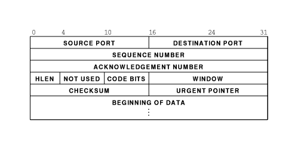

Computer Networks
Prev|
Next|
Index
Transport Layer Protocol (continued)
TCP connection is a duplex connection. That means there is no difference between two sides once the connection
is established.
Salient Features of TCP
- Piggybacking of acknowledments:The ACK for the last received packet need not be sent as a new packet, but
gets a free ride on the next outgoing data frame(using the ACK field in the frame header). The technique is temporarily
delaying outgoing ACKs so that they can be hooked on the next outgoing data frame is known as piggybacking. But ACK can't
be delayed for a long time if receiver(of the packet to be acknowledged) does not have any data to send.
- Flow and congestion control:TCP takes care of flow control by ensuring that both ends have enough resources
and both can handle the speed of data transfer of each other so that none of them gets overloaded with data. The term
congestion control is used in almost the same context except that resources and speed of each router is also taken care
of. The main concern is network resources in the latter case.
- Multiplexing / Demultiplexing:
Many application can be sending/receiving data at the same time. Data from all of them has to be multiplexed together.
On receiving some data from lower layer, TCP has to decide which application is the recipient. This is called
demultiplexing. TCP uses the concept of port number to do this.
TCP segment header:

Explanation of header fields:
- Source and destination port :These fields identify the local endpoint of the connection. Each host may decide
for itself how to allocate its own ports starting at 1024. The source and destination socket numbers together identify
the connection.
- Sequence and ACK number :
This field is used to give a sequence number to each and every byte transferred. This has an advantage over giving the
sequence numbers to every packet because data of many small packets can be combined into one at the time of retransmission,
if needed. The ACK signifies the next byte expected from the source and not the last byte received. The ACKs are
cumulative instead of selective.Sequence number space is as large as 32-bit although 17 bits would have been enough if
the packets were delivered in order. If packets reach in order, then according to the following formula:
(sender's window size) + (receiver's window size) < (sequence number space)
the sequence number space should be 17-bits. But packets may take different routes and reach out of order. So, we
need a larger sequence number space. And for optimisation, this is 32-bits.
- Header length :This field tells how many 32-bit words are contained in the TCP header. This is needed because
the options field is of variable length.
- Flags :
There are six one-bit flags.
- URG :
This bit indicates whether the urgent pointer field in this packet is being used.
- ACK :This bit is set to indicate the ACK number field in this packet is valid.
- PSH :
This bit indicates PUSHed data. The receiver is requested to deliver the data to the application upon arrival and not
buffer it until a full buffer has been received.
- RST :
This flag is used to reset a connection that has become confused due to a host crash or some other reason.It is also used
to reject an invalid segment or refuse an attempt to open a connection. This causes an abrupt end to the connection, if
it existed.
- SYN :
This bit is used to establish connections. The connection request(1st packet in 3-way handshake) has SYN=1 and ACK=0. The
connection reply (2nd packet in 3-way handshake) has SYN=1 and ACK=1.
- FIN :
This bit is used to release a connection. It specifies that the sender has no more fresh data to transmit. However, it
will retransmit any lost or delayed packet. Also, it will continue to receive data from other side. Since SYN and FIN
packets have to be acknowledged, they must have a sequence number even if they do not contain any data.
- Window Size :
Flow control in TCP is handled using a variable-size sliding window. The Window Size field tells how many bytes may be
sent starting at the byte acknowledged. Sender can send the bytes with sequence number between (ACK#) to (ACK# +
window size - 1) A window size of zero is legal and says that the bytes up to and including ACK# -1 have been received,
but the receiver would like no more data for the moment. Permission to send can be granted later by sending a segment
with the same ACK number and a nonzero Window Size field.
- Checksum :
This is provided for extreme reliability. It checksums the header, the data, and the conceptual pseudoheader. The
pseudoheader contains the 32-bit IP address of the source and destination machines, the protocol number for TCP(6),
and the byte count for the TCP segment (including the header).Including the pseudoheader in TCP checksum computation
helps detect misdelivered packets, but doing so violates the protocol hierarchy since the IP addresses in it belong
to the IP layer, not the TCP layer.
- Urgent Pointer :
Indicates a byte offset from the current sequence number at which urgent data are to be found. Urgent data continues
till the end of the segment. This is not used in practice. The same effect can be had by using two TCP connections,
one for transferring urgent data.
- Options :
Provides a way to add extra facilities not covered by the regular header. eg,
- Maximum TCP payload that sender is willing to handle. The maximum size of segment is called MSS (Maximum Segment Size). At the time of handshake, both parties inform each other about their capacity. Minimum of the two is honoured. This information is sent in the options of the SYN packets of the three way handshake.
- Window scale option can be used to increase the window size. It can be specified by telling the receiver that the window size should be interpreted by shifting it left by specified number of bits. This header option allows window size up to 230.
- Data :
This can be of variable size. TCP knows its size by looking at the IP size header.
Topics to be Discussed relating TCP
- Maximum Segment Size :
It refers to the maximum size of segment ( MSS ) that is acceptable to both ends of the connection. TCP negotiates for
MSS using OPTION field. In Internet environment MSS is to be selected optimally. An arbitrarily small segment size
will result in poor bandwith utilization since Data to Overhead ratio remains low. On the other hand extremely large
segment size will necessitate large IP Datagrams which require fragmentation. As there are finite chances of a fragment
getting lost, segment size above "fragmentation threshold " decrease the Throughput. Theoretically an optimum segment
size is the size that results in largest IP Datagram, which do not require fragmentation anywhere enroute from source
to destination. However it is very difficult to find such an optimum segmet size.
In system V a simple technique is used to identify MSS. If H1 and H2 are on the same network use MSS=1024. If on
different networks then MSS=5000.
- Flow Control :
TCP uses Sliding Window mechanism at octet level. The window size can be variable over time. This is achieved by utilizing
the concept of "Window Advertisement" based on :
- Buffer availabilty at the receiver
- Network conditions ( traffic load etc.)
In the former case receiver varies its window size depending upon the space available in its buffers. The window is
referred as RECEIVE WINDOW (Recv_Win). When receiver buffer begin to fill it advertises a small Recv_Win so that the
sender does'nt send more data than it can accept. If all buffers are full receiver sends a "Zero" size advertisement.
It stops all transmission. When buffers become available receiver advertises a Non Zero widow to resume retransmission.
The sender also periodically probes the "Zero" window to avoid any deadlock if the Non Zero Window advertisement from
receiver is lost. The Variable size Recv_Win provides efficient end to end flow control.
The second case arises when some intermediate node ( e.g. a router ) controls the source to reduce transmission rate.
Here another window referred as COGESTION WINDOW (C_Win) is utilized. Advertisement of C_Win helps to check and avoid
congestion.
-
Congestion Control :
Congestion is a condition of severe delay caused by an overload of datagrams at any intermediate node on the Internet.
If unchecked it may feed on itself and finally the node may start dropping arriving datagrams.This can further aggravate
congestion in the network resulting in congestion collapse.
TCP uses two techniques to check congestion.
- Slow Start :
At the time of start of a connection no information about network conditios is available.
A Recv_Win size can be agreed upon however C_Win size is not known. Any arbitrary C_Win size can not be used because
it may lead to congestion. TCP acts as if the window size is equal to the minimum of ( Recv_Win & C_Win). So following
algorithm is used.
- Recv_Win=X
- SET C_Win=1
- for every ACK received C_Win++
- Multiplicative decrease :
This scheme is used when congestion is encountered ( ie. when a segment is lost ). It works as follows.
Reduce the congestion window by half if a segment is lost and exponentially backoff the timer ( double it ) for
the segments within the reduced window. If the next segment also gets lost continue the above process.
For successive losses this scheme reduces traffic into the connection exponentially thus allowing the intermediate
nodes to clear their queues. Once congestion ends SLOW START is used to scale up the transmission.
- Congestion Avoidance :
This procedure is used at the onset of congestion to minimize its effect on the network. When transmission is to be
scaled up it should be done in such a way that it does'nt lead to congestion again. Following algorithm is used .
- At loss of a segment SET C_Win=1
- SET SLOW START THRESHOLD (SST) = Send_Win / 2
- Send segment
- If ACK Received, C_Win++ till C_Win <= SST
- else for each ACK C_Win += 1 / C_Win
- Time out and Retransmission :
Following two schemes are used :
- Fast Retransmit
- Fast Recovery
When a source sends a segment TCP sets a timer. If this value is set too low it will result in many unnecessary
treransmissions. If set too high it results in wastage of banwidth and hence lower throughput. In Fast Retransmit
scheme the timer value is set fairly higher than the RTT. The sender can therefore detect segment loss before the
timer expires. This scheme presumes that the sender will get repeated ACK for a lost packet.
- Round Trip Time (RTT) :
In Internet environment the segments may travel across different intermediate networks and through multiple routers.
The networks and routers may have different delays, which may vary over time. The RTT therefore is also variable.
It makes difficult to set timers.
TCP allows varying timers by using an adaptive retransmission algorithm. It works as follows.
-
Note the time (t1) when a segment is sent
and the time (t2) when its ACK is received.
-
Compute RTT(sample) = (t 2 - t 1 )
-
Again Compute RTT(new) for next segment.
-
Compute Average RTT by weighted average of old and new values of RTT
-
RTT(est) = a *RTT(old) + (1-a) * RTT (new) where 0 < a < 1
A high value of 'a' makes the estimated RTT insensitive to changes that last for a short time and RTT relies on the
history of the network. A low value makes it sensitive to current state of the network. A typical value of 'a'
is 0.75
-
Compute Time Out = b * RTT(est) where b> 1
A low value of 'b' will ensure quick detection of a packet loss. Any small delay will however cause unnecessary
retransmission. A typical value of 'b' is kept at .2
Image References
-
http://plato.acadiau.ca/courses/comp/Eberbach/comp4343/lectures/transport/Com-TCP/f20_6.gif
back to top
Prev| Next |
Index